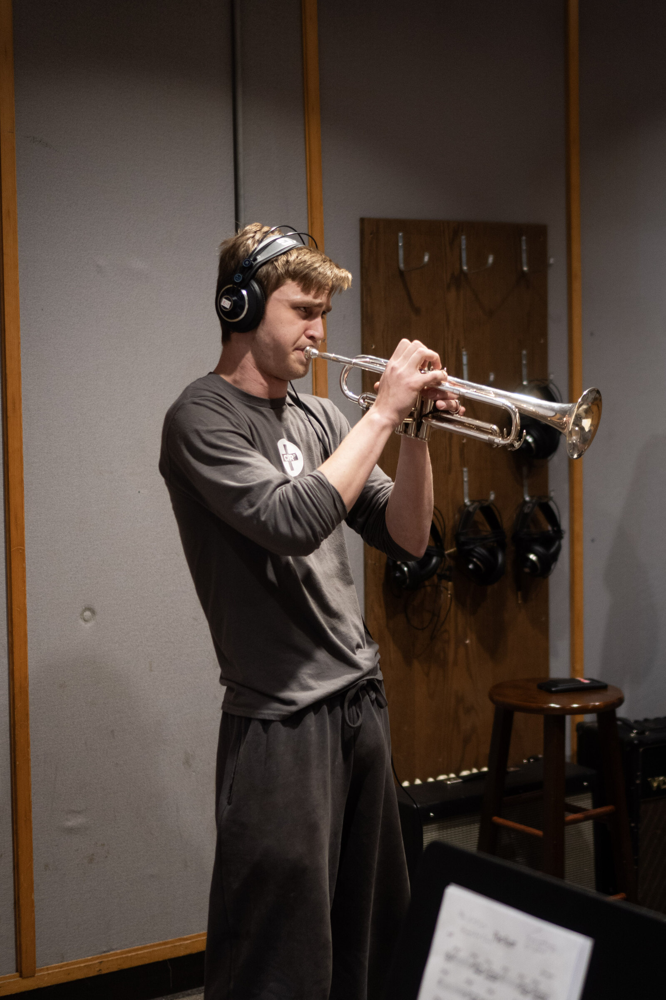

Performance
Jazz Trumpet
Rooted in improvisation and dynamic expression, Anton's approach to the trumpet balances technical mastery with deep emotional resonance. Whether leading an ensemble or working as a session player, he brings years of focused study and live stage experience to every performance.

Language and Feel
His strongest ground is Latin jazz, bebop, hard bop, and straight-ahead playing. In Latin settings he locks to clave and lets the horn ride the montuno rather than fight it. In bebop and hard bop he leans on the vocabulary the way it was meant to be used, as a working language rather than a set of licks, with attention to articulation, forward motion, and the shape of a line across the changes.
Straight-ahead is where all of it meets. Time, tone, and taste carry more weight than range or velocity, and the goal on any given tune is the same: say something specific, say it in the pocket, and leave room for the rest of the band.

The 6's
For two years Anton held the trumpet chair in The 6's, a six-piece fusion combo. The group's writing sat where jazz harmony meets funk and rock feel, which meant switching between horn-section discipline and open blowing inside the same tune, often within the same chorus.
Two years with a fixed lineup does something a pickup gig cannot. The band learned each other's habits, arrangements got rebuilt from the stage rather than the page, and the trumpet part became a voice inside a group sound instead of a feature laid on top of one.

Xtra Sensory Perception
His first combo was Xtra Sensory Perception, a four-piece jazz group he gigged with in Vermont while growing up and still in high school. A quartet leaves nowhere to hide. With one horn and a rhythm section, every chorus is exposed, every entrance is audible, and the only way through a tune is to know the form cold and listen hard.
Those Vermont gigs set the working habits that still hold: show up prepared, learn the room, and play for the band you're actually standing in front of.
In the Studio
Tracking sessions
Session work asks for a different set of instincts than the stage: consistent tone take after take, clean entrances, and the discipline to serve the arrangement rather than the moment.
On Stage
Live performance
Recital hall and club dates, shot against the house lighting.